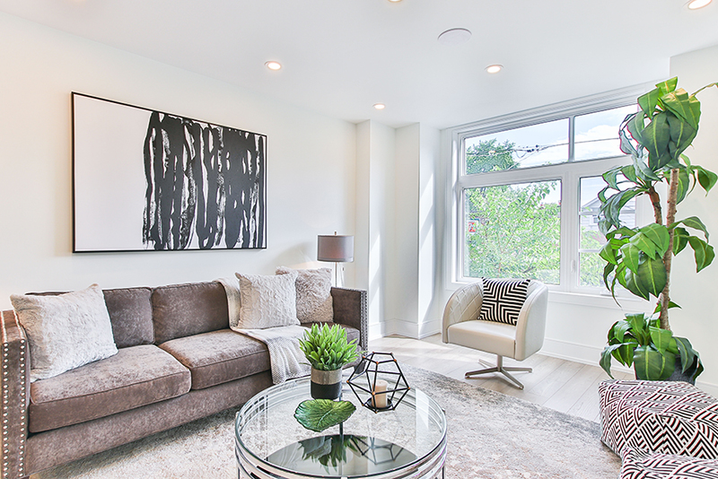
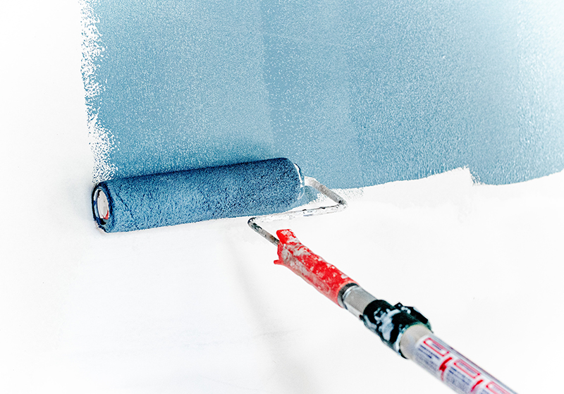

10 Tata Letak Minimalis Untuk Ruang Tamu

Ruang tamu menjadi salah satu tempat pentuing di rumah. Pada umumnya, ruang tamu lah yang akan memberikan kesan pertama terhadap keseluruhan rumah. Ruang tamu yang tak tertata dengan baik akan dianggap menggambarkan keseluruhan rumah yang artinya memang tidak
read more...
Aug 21, 2022
Tips Memilih Cat Dinding Kombinasi

Cara termudah untuk memilih warna cat tembok rumah yang cocok adalah dengan memilih warna yang sesuai dengan selera kita. Warna cat tembok kesukaan kita bisa menjadi warna dasar untuk dekorasi. Kemudian, kita bisa memilih warna-warna senada untuk memberi aksen pada keseluruhan
read more...
Aug 21, 2022
Dekorasi Ruang Kerja yang Fungsional
WFH (Work From Home) sedang menjadi perbincangan hangat di masa pandemi sekarang. Beberapa perusahaan telah mewajibkan para pekerjanya untuk berkerja dari rumaH. Hal ini membuat kita terkadang akan merasa bosan.
Untuk itu, perlu dibangun suasana yang nyaman agar
read more...
Aug 21, 2022